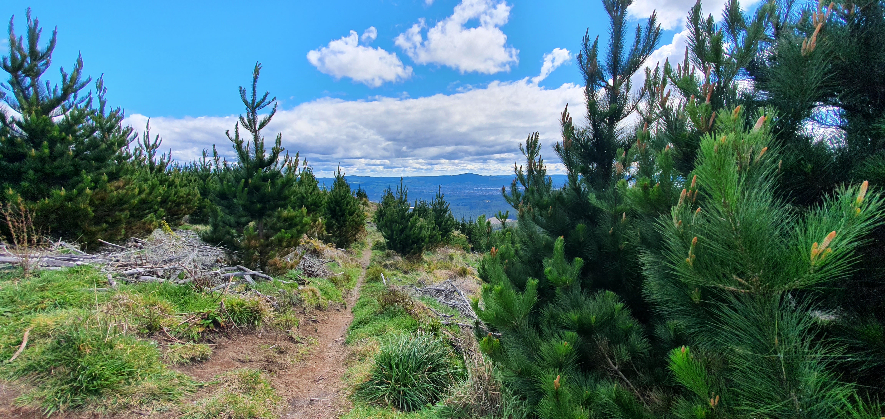

I love computers, it is my passion, not necessarily playing games but tinkering with software and hardware. I love programming in my free time. I usually use Python and Html, Css, and some Javascript. I also like opening and fixing computers and reinstalling operating systems and creating virtual machines.
My favourite sports are football/futsal and the goat of all sports - Mountain Biking. My favorite trail is Split Enz which is a very long trail and takes about 2 hours to get to if using the bus/shuttle half way, or 3 hours without.
Mountain Biking, Soccer and Computers are my 3 best interests.
I have a relatively medium sized family. Consisting of my:
My dad owns Dominos Porirua and spends most of his time there. My mum usually stays home and makes food, does home duties and goes to the gym. My brother plays games all day and is always annoying. Our family is usually calm but when all 4 members are present there is chaos.
My favourite place in New Zealand is probably the top of a mountain in Rotorua which has a Mountain Bike trail called Split Enz. The Trail is in the Whakarewarewa Forest and has an amazing view with a unresistable way down.
The photo was taken by me. It has a mountainbike trail at the front and has many trees and natural bushes on the side. There are mountains around the horizon. The Place has a amazing view and is quite high up.
I use the internet alot as it is a great resource, I use the internet for school, Homework and entertainment My most used websites are shown:
My most used web browser is safari, then Chrome.
*Unsure
To me, Music makes a major part of my life. I cant live without music. I have many songs i like but a few are shown below.
Like My Father
Jax
Teenage Dream
Stephan Dawes
| a | a | a | a | a | a | |
|---|---|---|---|---|---|---|
| a | a | a | a | a | a | a |
| a | a | a | a | a | a | a |
| a | a | a | a | a | a | a |